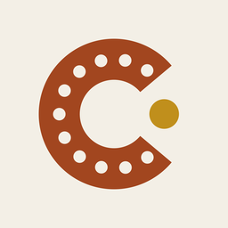
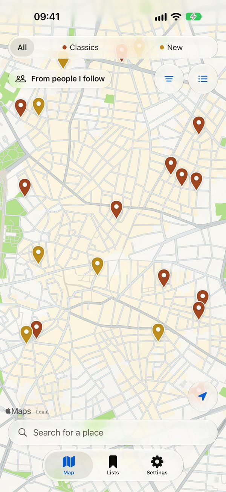
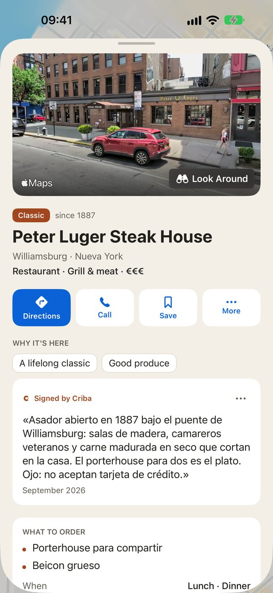
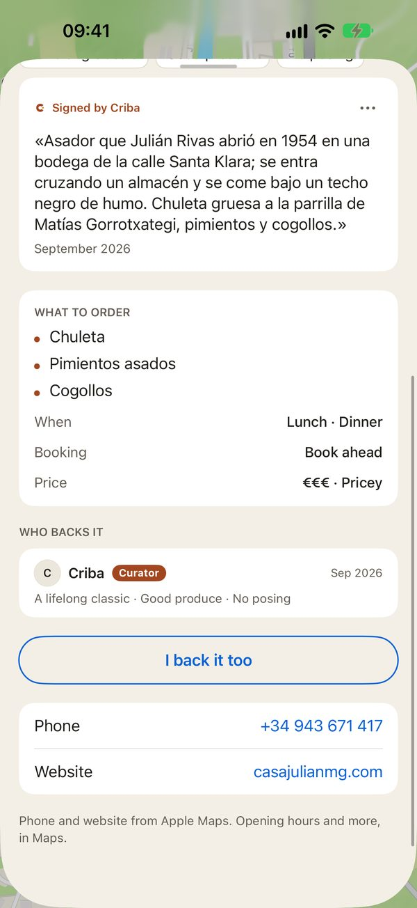
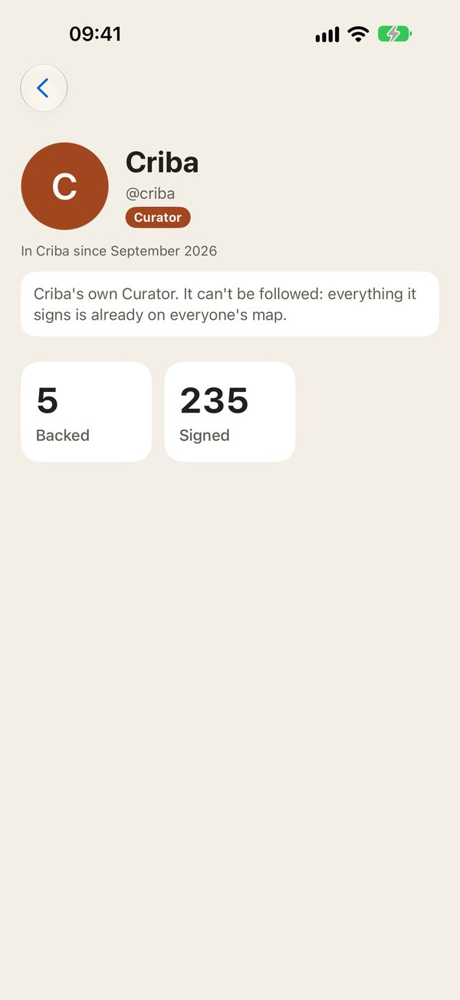

Seize Apps · iOS
Criba
Criba es un mapa donde los sitios entran por mérito, no por estrellas ni anuncios. Clásicos que han demostrado algo con los años y nuevos con criterio, cada uno con los motivos por los que está y notas firmadas por quien lo respalda. Cualquiera puede proponer un sitio; lo firma un Curator o no entra.




Qué hace
Una sola cosa, bien hecha.
Cada sitio, con su porqué
Una lista cerrada de motivos —un clásico, el producto, el precio, el local— y notas firmadas, nunca una puntuación. Horario, teléfono y cómo llegar, en vivo desde Apple Maps.
Lo que te apetece, ahora
Filtra por tipo de sitio, cocina, precio y momento, o mira lo que está abierto ahora. Qué pedir y si hay que reservar, en la ficha.
Todo va firmado
Mira quién respalda cada sitio y sigue a gente con tu gusto. Propón lo que falta; decide un Curator y, si no entra, te dice por qué.
Privacidad
Tuyo, no nuestro.
Criba tiene cuentas (Sign in with Apple, sin pedir nombre ni correo) y un servidor en la UE para sitios, notas y perfiles. Mirar el mapa no necesita cuenta. Tiene su propia política de privacidad y sus condiciones.
Una app de Seize Apps.